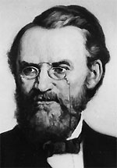

|

|

|
|
|
Politician and general Carl Schurz was arguably
the most influential German American of the nineteenth
century. Born in a small village near Cologne, Prussia on
March 2, 1829, Schurz fought briefly in his homeland's 1848
revolution. In 1852, Schurz immigrated to the United States
ending up in Wisconsin. There, he practiced law and became
an active abolitionist and Republican. After Lincoln's
election, he gained a position as the envoy to Spain, but
returned to America in 1862. He feared European
intervention on the side of the Confederacy if abolition did
not occur quickly. Throughout the Civil War, Schurz served
as a valuable political ally to President Lincoln.
To appease German-Americans, Lincoln appointed the
inexperienced Schurz as brigadier general of volunteers.
Schurz joined John C. Frémont's pursuit of Stonewall
Jackson in the Shenandoah Valley. When Franz Siegel
replaced Frémont, Schurz transferred to what became
known as the "German unit." Schurz later gained praise for
his efforts at Second Bull Run, though his division later
performed poorly at Chancellorsville and Gettysburg. Soon
after, he took a leave of absence to campaign actively for
Lincoln's reelection and care for his ailing, pregnant wife.
During early Reconstruction Schurz toured the South
reporting the poor treatment of the freedmen, causing
divisiveness between President Johnson and the Radical
Republicans. In 1869, the Missouri legislature elected him
to the Senate where he spent his single term railing against
the policies of President Grant. Schurz wanted
reconciliation for the country, but only with the guarantee
of freedmen's rights.
In 1877, Schurz, one of the first environmentalists, took
over the Secretary of Interior position under the Hayes
administration where he became a lifelong proponent of civil
service reform.
Before his death in May 1906, Schurz published a
two-volume biography of Henry Clay and sketches of the lives
of Charles Sumner and Abraham Lincoln, though he did not
complete his dual language (German and English)
autobiography. Two historians posthumously completed
Schurz's Reminiscences, which was published between
1907 and 1909.
Source: John T. Hubbell and James W. Geary, Biographical Dictionary of the
Union: Northern Leaders of the Civil War (Westport, CT: Greenwood Publishing,
1995), 459.
|